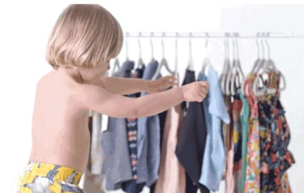

就像大人经常会说小孩子没有腰，所以不可能腰痛一样，对待腋臭，很多家长也忽略了这种尴尬对孩子的影响。”造成孩子别扭心理的根本原因——家长的忽视。
曾经有一位很叛逆的孩子，他极力要求家人给他治疗腋臭，不治疗就不上学不回家不吃饭，家人被逼的没有办法，最后在医院做了手术，却在手术护理过程中复发，导致狐臭病情加重。
孩子为什么会这么执着于腋臭治疗，这是家长需要了解的。其实对孩子来说，世界很简单，玩伴、学业和家庭是他们的三大世界支柱。

但小孩不像大人一样，会掩饰情绪，很可能自己的孩子在学校因腋臭受到排挤，这种现象甚至很可能影响学业;当家庭不重视这种心理时，孩子又可能与家庭产生隔阂，孩子的世界崩塌，孩子的性格也会越来越孤僻。腋臭，其实真的不止家长想象的那么简单。家长应知道：
1.孩子也有难以启齿的秘密
腋臭就是件令人尴尬的事情，想象一下小小的男子汉要和妈妈说出这种尴尬的问题，还很有可能得不到妈妈的重视，这会让孩子有多羞愧!在孩子眼中，自己永远应当像个大人一样，因此不能因为腋臭而丢了面子，所以这导致孩子有了腋臭困扰也很少与家长沟通，这时候家长发现孩子有腋臭应当及时与孩子普及腋臭知识。
2.孩子想和同龄人一样清新
有腋臭的孩子基本也会有家人有腋臭，有些家长在漫长的腋臭斗争中渐渐放弃诊疗，认为腋臭对自己没什么影响，却完全忘记最初自己有腋臭时候的烦恼，对孩子来说，他们却是在重复大人最困扰的历史。他们面临同龄人异样的眼光，有可能甚至同龄人的排斥，所以他们非常渴望一个清新的人生，他们希望能得到有效的腋臭诊疗。